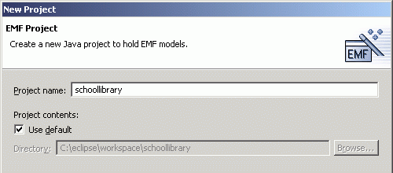
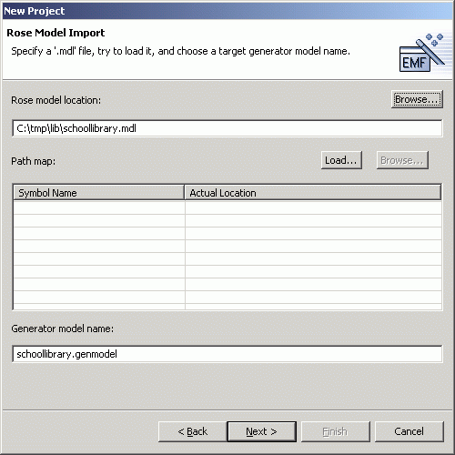
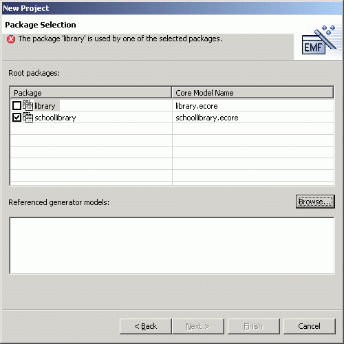
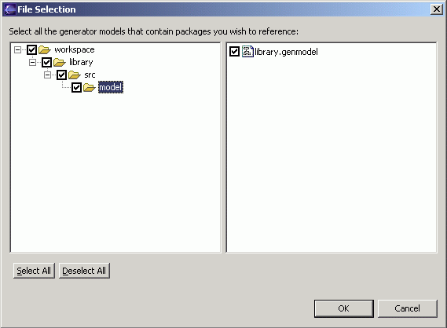
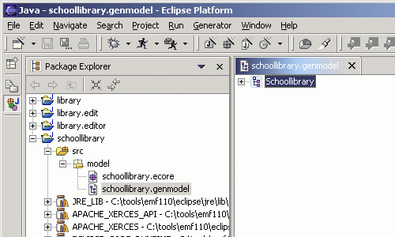

Generating an Extended EMF Model
Top
Previous: Prerequisites Next: Generating the EMF Model and the Editor
Step 1a: Creating a New EMF Model from a Rose Model
Save the Rose model file schoollibrary.mdl somewhere on your
workstation, say, d:\tmp\lib. It contains both the "library" and "schoollibrary" packages:

We should really place each of the packages in a separate ".cat" file and reference them
in the ".mdl" file. This would enable the packages to be shared
by various models. However, this is not the key for this tutorial, we have duplicated
the "library" package in the previous tutorial in the "schoollibrary" model.
The generator behaves exactly the same whether the package is contained inside
the same ".mdl" file or referenced in an external ".cat" file.
The following steps will create a new EMF model project in the workspace:
- Select "File/New/Project..." to bring up the New Project dialog.

-
Select "Eclipse Modeling Framework" and then "EMF Project". Click the
"Next" button.

-
Give the project a name (for example, "schoollibrary"), and then click the "Next"
button.

-
Select "Load from a Rose model" and click the "Next" button.

-
Click on the "Browse" button and use the file dialog to locate the Rose model file.

- EMF will examine the Rose model file and suggest a default GenModel name . You can change the name in the entry field if you
wish. Click the "Next" button.

- The Rose model contains two packages, "library" and "schoollibrary". Select "schoollibrary".
It is the model we want to generate. We want to reuse the existing "library"
model, so we don't check the "library" package. However, because "schoollibrary"
references the "library" model, we need to specify where to find the "library"
model. Click the "Browse" button.

- EMF will search the workspace and locate all the models it can find. Select the project and path where the "library.genmodel"
is found. Click the "OK" button.

- Select the Library package (in the library's .genmodel tree) that you want to reference. As
soon as you select the "Library" package, note that the error message disappears. Click the "Finish" button.

-
An Ecore model and a GenModel will be created. The GenModel, which
controls code generation for the model, is opened in the main view.

Top
Previous: Prerequisites
Next: Generating the EMF Model and the Editor